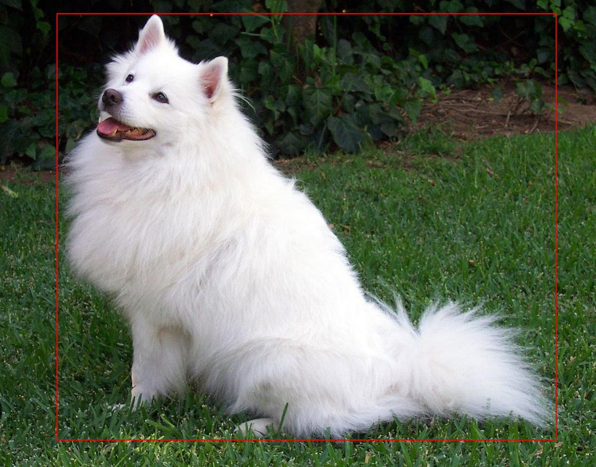
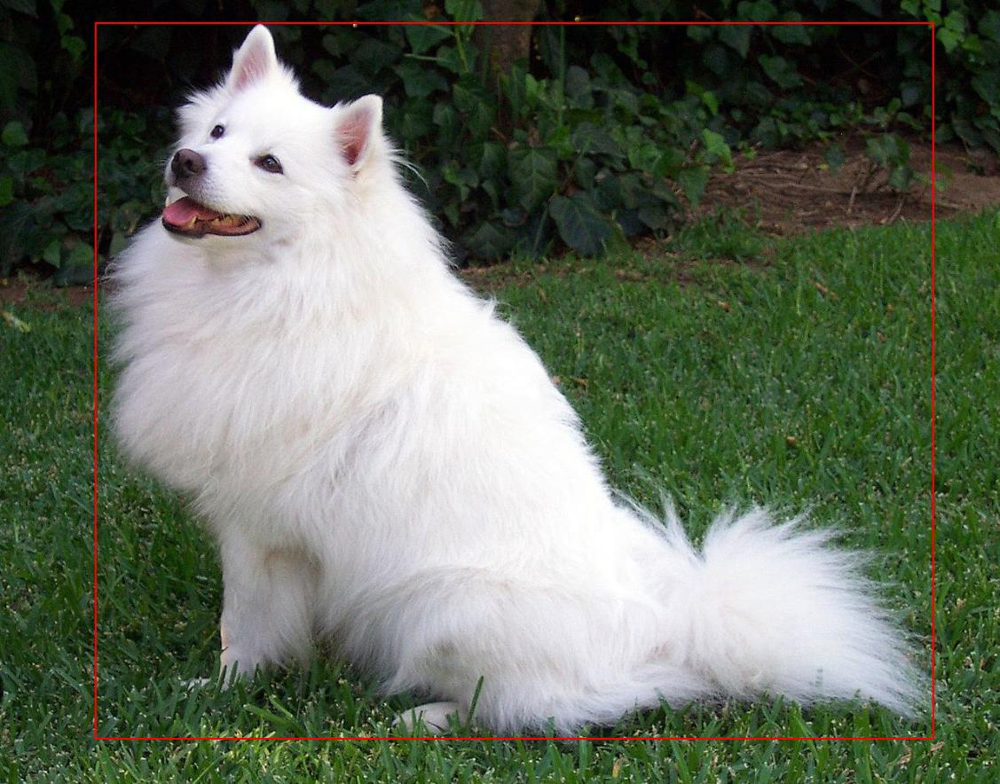

|
A GUI for image annotation |
Andres Perez-Uribe
Hector Satizabal
Axel Fahy
 SAP GUI for the gold version Apple Watch ? (from mindsetconsulting blog) |
An interface is worth a thousand pictures." Ben Shneiderman |
The goal of this laboratory is to build Graphical User Interfaces while considering the fundamental principles of design, proposed by Don Norman.
The project can be realised using Qt, Kivy or any library you are familiar with.
A GUI for image annotation
Within the context of a Machine Learning project for developing an application capable of locating and identifying objects in an image, you need to provide a dataset of "labelled" or "annotated" images. This means, a collection of images showing where are the objects and indicating what they are. Such a database is then used to train, for instance an artificial neural network (or any other Machine Learning algorithm), which takes advantage of that database to offer the capability of locating and identifying the kind of objects we labelled (provided that they share some features) in new images.
The objective of this laboratory is to develop a GUI that must allow the user to annotate multiple objects in an image. Suppose you have a collection of images to annotate in a given folder.
The user must be able to select the region of the image containing the object and assign it a label. Multiple objects, hence labels might be present on the image.
Here are some examples of images to annotate:
 

You can use the Wang image database that you can download from Cyberlearn to have some images to annotate.
The program must be able to generate an output file describing for each image the labels that have been annotated and where the item is located.
Example of possible outputs:| Image | Objects | Coordinates |
|---|---|---|
| ~/Images/image01.jpg | [cat, horse] | [[(2, 2), (2, 50), (100, 2), (100, 50)], [(13, 80), (13, 200), (300, 80), (300, 200)]] |
| ~/Images/image02.jpg | [dog] | [[(27, 24), (27, 77), (155, 24), (155, 77)]] |
| ... | ... | ... |
This is just an example of a possible format for the output, if you find a better way to display those information, don't hesitate.
The GUI must contain:
The GUI must give feedback to the user concerning:
The GUI must fulfill the requirements in the checklist of design considerations (after Don Norman) presented during the last lesson. You can modify the type of interface: button, menu, slider, etc. proposed in the first list if you consider it to be more appropriate.
1. Sketch
Prepare a sketch of your user interface and send it via Cyberlearn
before Tuesday 8th October, before midnight
User interface sketching is a kind of drawing on a paper... but it is
not only a simple drawing. Its purpose is to reveal the result of
problem-solving thinking. It communicates the idea to other
people. Drawings do not have to be pretty, but they must help you
validate your idea. Sketches must also reveal the user flow, thus you
may provide multiple pages of drawings illustrating the dynamics of
the interface. Nevertheless, your interface might change during development.
2. GUI implementation
The project can be realised using Qt, Kivy or any library you are familiar with. In order to guide you towards the implementation of the GUI, we provide you with two starting guides for Qt and Kivy. Qt uses C++ here, and Kivy is based on Python, which is a language you will be using a lot next semester.
3. Report
Please, provide a brief report (max. 4 pages) presenting and accompanying your GUI. Present the issues tackled by your solution and justify your choices. Provide your code within a zip file indicating your names. Demo of your interface: Tuesday 4th November, 2019 before midnight